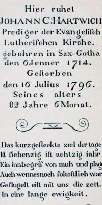

John C. Hartwick
John C. Hartwick (often John Christopher Hartwick and sometimes Hartwig) was an evangelical Lutheran minister in greater Albany County during the second half of the eighteenth century. Although mostly not an actual city resident, his activities impacted the lives of a substantial number of early Albany people. This sketch focuses on his Albany context and leaves his larger life to his more and less comprehensive biographers.
Hartwick was born in Germany during the first half of 1714. According to traditional resources, he is said to have been well educated at the University of Halle and to have been an advocate of Lutheran Pietism. The course of his ministry in Europe following ordination is unclear.
Hartwick would have been in his thirties when he was called to North America in 1746 to serve as a missionary to the German settlers in the area around Rhinebeck. However, his moralistic bent, rigidity, and eccentricity led to his removal from his first calling and would be render him an itinerant preacher without sustained employment and dependent on charity for most of his life.
Beginning in 1754, he led an initiative that in 1761 left him and ten partners with more than 21,000 acres south of the Mohawk and west of the Susquehanna in the area that became Cooperstown. On that land, he envisioned a pietistic utopian community he planned to call "New Jerusalem." 
This difficult eccentric was reputedly "repulsed" by women and probably never married.
In November 1771, he successfully petitioned the city Council for a room in the hospital "till next spring" presumably for use in holding revival meetings. In March 1772, the Albany Gazette advertised that "During Lent, [Hartwick] will give weekly Lectures on Our Savior's Passion to be held in Room (No. 9) of he Hospital. The first is to be on Sunday, the 15th inst. at 5 o'clock in the evening. N.B. The lecture will be delivered in the English language."
At this point, we recognize that we have only an incomplete record of John C. Hartwick's life. For example, we have not been able to account for his time during the era of the American Revolution as he thus far has escaped notice in the extant records of wartime governments. Perhaps, he was among those taking refuge on Livingston Manor.
In 1790, his household was configured on the census of Watervliet. Living in that house at what probably was a more rural part of the Manor (and probably south of Albany) were two unspecified females. During that time, he also boarded at the Pearl Street home of merchant John Andrews and at other places as he soon wore out his welcome in each locale. Even through his late seventies (and possibly beyond), Hartwick appears to have been constantly on the move and does not seem to lived a "settled life."
Stricken while enroute from New York to Albany, John C. Hartwick died "unexpectedly" at the Livingston family seat at Clermont in July 1796. Lieutenant Governor Jeremiah Van Rensselaer was among those named executors of his estate. Following his death, there was some lobbying to use the estate resources intended to establish a Lutheran seminary to locate it in Albany. Instead, however, that initiative succeeded as Hartwick Seminary and today as Hartwick College in Oneonta, Otsego County.
The image shown here has been adapted from a tablet sunk into the floor of the Lutheran Ebenezer church in Albany (today First Lutheran Church) - where his remains were recommitted in February 1798. Hartwick had been receiving services at First Lutheran and was a member there for a number of years.
His will passed (detailing specific estate instructions) probate in Albany County in August 1799.
Online resources: Hartwick Seminary Records; Wikipedia; in Appleton's Cyclopedia (less verifiable); Orthodoxy and Pietism;" Edward F. Bacon; and Hartwick: the Heart of Otsego County, published in 2002 and online - which provides details on the latter part of his life. See also, Angelfire for a tempting likeness and his time in the mid-Hudson valley. However, the most interesting portrait of his times is by Alan Taylor in this useful format.